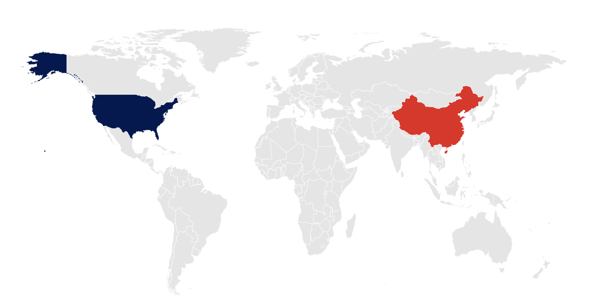

![]()
Code
knitr::opts_chunk$set(echo = TRUE, eval = FALSE, warning = FALSE, message = FALSE)For this infographic, I used a dataset from Kaggle user Alessandro Lo Bello called Agri-food CO2 emission dataset - Forecasting ML (from Kaggle). I found this dataset while searching for datasets that incorporated agriculture, climate change, and population data over time, as I was interested in creating visualizations about how agriculture and food sector emissions have changed over time.
This dataset contains variables on emissions relating to the agri-food system, from crop cultivation and residue to food transportation and retail, as well as types of fires and soil-related emissions; year; country; demographic variables about urban, rural, and total population; average temperature (ºC). In my analysis, I primarily use the country, year, total emissions, and 10 of the emissions variables. I also use the “total population male” and “total population female” columns to create a total population column, which I then use to create an emissions per capita column.
When I first started this project, I wanted to look at global agri-food emissions as well as the economic freedom index that each country was associated with. As you can imagine, the two datasets were not compatible to start out with, so I spent about 12 hours just wrangling the data and getting everything to be able to play nicely together (think: renaming 112 countries). Ultimately, incorporating the economic freedom data felt beyond the scope of what I could visualize in an infographic targeted at a very general audience, so I scrapped that idea (and my many hours of work) and decided to focus on the United States of America and mainland China. That being said, my data wrangling work prepared me well to work with either dataset, and increased my gratitude at the simplicity of working with one while building my exposure to how differently some datasets label countries.
In my initial data exploration, I found that USA and China are two of the highest emitters of agri-food carbon dioxide emissions worldwide. China and USA are also the top two countries in terms of total emissions, contributing roughly 25.69% and 12.10% of the world’s total emissions, respectively ClimateTrace. Agri-food (combining different emissions sources relating to agriculture and the food industry, from land use change to food retail and beyond) emissions make up a significant portion of all greenhouse gas (GHG) emissions – around 13% of total emissions (in CO2 equivalent) according to ClimateTrace.
As two of the biggest countries (in terms of economic power, area, political influence, etc.) in the world, their trends and decisions have historically influenced international climate targets and agreements Office of the Press Secretary, 2016. A disappointing pre-COP28 meeting between President Biden and President Xi Jinping reminded me of how frustrating I find these non-committal agreements, carefully crafted to be politic Gelles, 2023, Sanger & Rogers, 2023.
As climate change does not wait for global leaders to come to agreements, I decided to move on and focus on the task at hand: creating visualizations using my chosen data set to answer primary and subsequent questions.
Primary Question: How have agri-food CO2 emissions changed over time in USA and mainland China?
Sub-questions:
How have total agri-food CO2 emissions changed over time in USA vs. China?
How have agri-food CO2 emissions per capita changed over time in USA vs. China?
What are the key contributors (emissions sources) to agri-food CO2 emissions in 1990 in USA and China, and how do they compare to the top agri-food emissions sources in 2020?
I ultimately address the first two questions in two line plot visualizations that I stitch together using patchwork, and address the third question in a lollipop plot, indicating different years as different colors.
I created my three visualizations (one map and two patchwork-quilted plots, for a total of one map and four plots) in R and used Canva to tie them all together into my infographic. I spent some (perhaps too much) time finding nice icons and drafting text to answer my guiding questions and discuss trends in the data while providing some relevant context.
I used colors to emphasize and consistently tie different aspects of the visualization, including a dark blue for every time I mention USA and red for China. While I’ll discuss my design decisions for each plot more in-depth below, I decided to choose these colors based on the flags of each country, and also used Coolors to visualize the compatibility of the different potential shades of red and blue. For some of the text, the shade of blue that I chose for my plots appeared to be too similar to black, so in order to emphasize the country name enough (the base text is black, and the red text I associated with “China” stood out starkly), I ended up using a slightly lighter blue. I also added the country flags to further emphasize the association between the colors and countries and to provide more obvious context for my infographic.
Choosing illustrated, cartoon-esque icons helps make the visualization more “fun” and interesting, lowering the stakes of interacting and engaging with the infographic and thus increasing accessibility. I added the context of how many miles it would take to drive enough to emit 1 kiloton of CO2 to more easily connect and contextualize my data. I included icons that I felt were representative of San Francisco (Golden Gate Bridge) and New York (State of Liberty) to make this more tangible. As with all text elements in my infographic, I utilized bold fonts and colors to emphasize important takeaways and thematic connections to each country.
Using Playfair Display for my infographic and plot title typeface increases legibility as it is a serif typeface and has many font options (from Regular to Black). Pairing this with Raleway as my infographic body text, plot subtitle, axis, legend, and caption text typeface provides a complimentary and extra-legible sans-serif typeface with an even wider range of font options (from Thin to Black).
I chose a white background for several reasons. Firstly, to portray a lighter mood – emissions that obviously relate to climate change can be scary and anxiety-provoking, but I wanted to make my infographic as easy to engage with as possible. Secondly, to pair well with the colors I chose for my plots and maximize legibility through visual contrast. Finally, to make incorporating visualizations and icons easier, as the default plot background in ggplot2 is already white. While it is easy enough to change the plot and panel background elements (element_rect() in the theme arguments) to be a different color, I felt that using a white background left me with a clean, simple theme for my overall design. Like black, it also pairs well with so many colors, so choosing designs and any other aesthetic elements was slightly more simple.
knitr::opts_chunk$set(echo = TRUE, eval = FALSE, warning = FALSE, message = FALSE)library("tidyverse") # for tidy everything! (data cleaning, wrangling)
library("here") # for reproducible file paths
library("showtext")
library("janitor") # used to clean column names
library("patchwork") # to stitch plots together
library("glue") # for scientific labeling on plots
library("scales") # provides the internal scaling infrastructure used by ggplot2, and gives you tools to override the default breaks, labels, transformations and palettes (installed automatically with {ggplot2} or {tidyverse})
library("ggtext") # used for customizing plot text
# import custom fonts from Google Fonts
font_add_google(name = "Playfair Display", family = "playfair")
font_add_google(name = "Raleway", family = "raleway")
#................enable {showtext} for rendering.................
showtext_auto()You can download the data from Kaggle or copy the download link and read it in without having to download locally.
agrifood_emissions <- read_csv(here("data", "Agrofood_co2_emission.csv"))
# alternatively
#agrifood_emissions <- read_csv("https://www.kaggle.com/datasets/alessandrolobello/agri-food-co2-emission-dataset-forecasting-ml/download?datasetVersionNumber=1")# =========== Tidying & wrangling data =================
ag_clean <- agrifood_emissions |>
janitor::clean_names() |> # the column names are not tidy, so I'll start out by renaming them to lower_snake_case()
# the column names are also quite long, though informative, so I'll rename a few of them to more easily referable titles
rename(country = area,
avg_temp_c = average_temperature_c,
total_emissions = total_emission, # plurals are always so tricky to keep track of, but "emissions" feels more natural than "emission"
urban_pop = urban_population,
rural_pop = rural_population,
agfood_waste_disposal = agrifood_systems_waste_disposal) |>
# adding a total population column
mutate(total_pop = (total_population_male + total_population_female)) |>
# making a proportion column to theoretically compare/standardize emissions per capita
mutate(emissions_per_capita = (total_emissions / total_pop))
# ========== Renaming country names ====================================
# dplyr already has a rename function, but I wanted to get more practice developing my own functions... sometimes reinventing the wheel is a good way to learn how the wheel works!
rename_function <- function(df, column, old_name, new_name) {
# using the specified dataframe
df |>
# mutate across the specified column
mutate(across(column,
str_replace, # use the str_replace function
pattern = old_name, # find the string pattern old_name
replacement = new_name)) # replace with new_name
}
# renaming agri-food emissions countries (China, USA) ----
ag_renamed <- ag_clean |>
rename_function("country", "China, Hong Kong SAR", "Hong Kong") |>
rename_function("country", "China, Taiwan Province of", "Taiwan") |>
rename_function("country", "China, mainland", "China (mainland)") |>
rename_function("country", "United States of America", "USA")
# =============== Creating subsets ==================================
# United States of America Subset
usa <- ag_renamed |>
filter(country %in% c("USA"))
# China Subset
china <- ag_renamed |>
filter(country %in% c("China (mainland)"))
# USA & China Subset
usa_china <- ag_renamed |>
filter(country %in% c("China (mainland)", "USA"))
# USA 2020
usa_2020 <- usa |>
filter(year %in% c(2020))
# China 2020
china_2020 <- china |>
filter(year %in% c(2020))
# USA & China in 1990, 2020
usa_china_90_20 <- usa_china |>
filter(year %in% c(1990, 2020))
# Average emissions across entire dataset
# I used this to obtain a value for a caption in my per capita emissions plot
all_avg_emissions <- ag_clean |>
group_by(year) |>
summarize(avg_tot_emissions = mean(total_emissions,
na.rm = TRUE),
avg_per_cap_emissions = mean(emissions_per_capita,
na.rm = TRUE)) |>
mutate(country = "Global Average")
# =========== Lollipop plot subsetting and wrangling =========================
# I'm comparing emissions levels from selected sources in 1990 and 2020
usa_china_subset <- usa_china_90_20 |>
# manually deselecting lower emissions columns
# note: one of the highest sources, "IPPU: Emissions from industrial processes and product use." had poor documentation and explanation of what was encompassed in this variable, so I did not include it in my visualization
select(-c(forestland, fires_in_organic_soils,
fires_in_humid_tropical_forests,
savanna_fires, forest_fires,
drained_organic_soils_co2,
pesticides_manufacturing,
manure_applied_to_soils,
crop_residues
)) |>
# pivot all columns other than this specified list
pivot_longer(cols = -c(country, year, rural_pop,
urban_pop, total_population_male,
total_population_female, total_pop,
avg_temp_c, emissions_per_capita,
total_emissions, ippu),
names_to = "emission_source", # new column name for types
values_to = "emissions_kt") |> # new column name for values
# relocate for easier quick-reading
relocate(c(emission_source, emissions_kt), .after = year) |>
group_by(country, year)
# create year subsets to plot
usa_china_dumb <- usa_china_subset |>
select(country, emission_source, year, emissions_kt) |>
ungroup() |>
group_by(country) |>
# using pivot_wider to create two new emissions_year columns contianing the appropriate values from the emissions_kt column
pivot_wider(names_from = year,
values_from = emissions_kt,
names_prefix = "emissions_") |>
# relocating these columns for more logical previewing
relocate(c(emissions_1990, emissions_2020), .after = emission_source)To answer my first two sub-questions (How have total agri-food CO2 emissions changed over time in USA vs. China? How have agri-food CO2 emissions per capita changed over time in USA vs. China?) I created a combined plot showing both total and per capita agri-food CO2 emissions over time in USA and China.
I first created a total emissions plot, comparing the yearly total agri-food CO2 emissions of USA and mainland China from 1990-2020 (the full year range of my dataset), using the total_population column I created in my data wrangling steps above. Several portions of the following code are commented out, as I removed certain design elements for the combined patchwork plot (caption, titles, etc.) that would be redundant or that I wanted to specify after combining my plots.
# I'm using the glue package and html formatting to get the subscripts for CO2 in my title and y-axis labels here
title_lab_p1 <- glue::glue("Total Agri-food CO<sub>2</sub> Emissions in USA and China (1990-2020)")
y_ax_label_total <- glue::glue("Agri-food CO<sub>2</sub> emissions (Million kt)*")
y_ax_label_per_cap <- glue::glue("Agri-food CO<sub>2</sub> emissions (kt)*")
# setting colors.... I used a colorpicker on the country flags to get these values
cols <- c("China (mainland)" = "#E7001D", "USA" = "#011951")
usa_china_tot_emissions_plot <- ggplot() +
# geom_point() +
geom_line(data = usa_china,
aes(x = year,
y = total_emissions,
color = country,
linetype = country)) +
# rescaling y-axis to be more legible (than 2e+06, for example)
scale_y_continuous(label = label_number(accuracy = 1,
scale = 0.000001, # millions
suffix = "M")) +
scale_color_manual(values = cols) +
# ---------- updating labels, fit for patchwork ------------
labs(
x = "", # removed for patchwork
y = y_ax_label_total,
# removed for patchwork
# title = "Agri-food CO2 emissions in USA and China (1990-2020)",
# title = title_lab_p1,
subtitle = "Total Emissions", # for patchwork
# caption = "*1 kiloton (kt) = 1000 kg",
color = "Country",
linetype = "Country") +
theme_bw() +
# ================== Theme ===================================
theme(
# removing most gridlines
panel.grid.minor.x = element_blank(),
panel.grid.major.x = element_blank(),
panel.grid.minor.y = element_blank(),
# lighter line color to emphasize trend over time
panel.grid.major.y = element_line(color = "whitesmoke"),
# increasing spacing between plots
# panel.spacing.x = unit(1.5, "lines"),
# removing background color of faceted plot labels
strip.background = element_rect(fill = "transparent"),
# adjusting legend position to sit within the plot
# legend.position = c(0.8, 0.2),
# adjusting text elements of different plot components
strip.text = element_text(family = "playfair", size = 10),
# ---------------- title ---------------------
plot.title.position = "plot",
# commented out for patchwork
# plot.title = ggtext::element_markdown(hjust = 0.45,
# vjust = 1,
# family = "Futura",
# face = "bold",
# size = 18
# it took a LOT of trial and error to get all of these margins set
# for each text element (title, substitle, caption, etc. for each plot)
# margin = margin(t = 1, r = 2,
# b = 1.2, l = 2,
# unit = "lines")
# --------------- subtitle -------------------
plot.subtitle = element_text(family = "playfair",
face = "bold",
size = 16,
# adjusting positioning of text
vjust = 1,
hjust = 0.5,
margin = margin(t = 0.2, r = 0,
b = 1, l = 0,
unit = "lines")),
# --------------- legend ----------------------
legend.title = element_text(family = "playfair",
face = "bold",
size = 11),
# legend.title.align = 0.5,
legend.text = element_text(family = "raleway",
size = 11),
legend.position = c(0.18, 0.80),
# --------------- x-axis ---------------------
axis.title.x = element_text(vjust = -1,
family = "playfair",
face = "bold",
size = 12),
axis.text.x = element_text(
hjust = 0.9,
# vjust = 0.9,
family = "raleway"),
# --------------- y-axis ----------------------
axis.title.y = element_markdown(family = "playfair",
vjust = 2,
face = "bold",
size = 12,
# customize axis title margins/spacing
margin = margin(t = 0, r = 1,
b = 0, l = 2,
unit = "lines")),
axis.text.y = element_text(family = "raleway"))
# ------------- caption -----------------------
# omitted for patchwork fit
# plot.caption.position = "plot",
# plot.caption = element_text(family = "Futura",
# hjust = 0.9,
# size = 10,
# margin = margin(t = 3, b = 0.5,
# l = 0, r = 0.2,
# unit = "lines"))
# )
# usa_china_tot_emissions_plotTo answer my second subquestion, “How have agri-food CO2 emissions per capita changed over time in USA vs. China?“ I created a similar plot comparing emissions per capita, which I calculated using the total_emissions column and the total_population column I created earlier to make an emissions_per_capita column. I also commented out certain design elements that would be redundant once I made the patchwork plot, but didn’t fully delete them so that I could still render the individual components of the combined plot if I ever wanted to go back and show them separately.
# ================ PER CAPITA PLOT =====================================
usa_china_per_cap_plot <- ggplot() +
geom_line(data = usa_china,
aes(x = year,
y = emissions_per_capita,
color = country,
linetype = country)) +
# removed because it skews the y-scale too much
# adding global average line
# geom_line(data = all_avg_emissions,
# aes(x = year,
# y = avg_per_cap_emissions,
# color = country,
# linetype = country),
# # linetype = "longdash",
# linewidth = 0.5) +
scale_color_manual(values = cols) +
# ------ updating labels, fit for patchwork ----------
labs(x = "Year",
y = y_ax_label_per_cap, # remove label for patchwork
# customized for patchwork
# title = "Agri-food CO2 emissions Per Capita",
# subtitle = "in the USA and China (1990-2020)",
subtitle = "Emissions Per Capita",
# caption = "*1 kiloton (kt) = 1000 kg \n \n Global Average Emissions Per Capita = 0.2 kt",
color = "", # remove label for patchwork
linetype = "" # remove label for patchwork
) +
guides(legend = "none") +
theme_bw() +
# ================== Theme ===============================
theme(
# removing most gridlines
panel.grid.minor.x = element_blank(),
panel.grid.major.x = element_blank(),
panel.grid.minor.y = element_blank(),
# lighter line color to emphasize trend over time
panel.grid.major.y = element_line(color = "whitesmoke"),
# increasing spacing between plots
panel.spacing.x = unit(1.5, "lines"),
# removing background color of faceted plot labels
strip.background = element_rect(fill = "transparent"),
# adjusting legend position to sit within the plot
# legend.position = c(0.8, 0.2),
# adjusting text elements of different plot components
strip.text = element_text(family = "raleway", size = 10),
# ---------------- title ---------------------
# omitted for patchwork
plot.title.position = "plot",
# plot.title = element_text(hjust = 0.45,
# vjust = 1,
# family = "Futura",
# face = "bold",
# size = 18),
# --------------- subtitle -------------------
plot.subtitle = element_text(family = "playfair",
face = "bold",
size = 16,
vjust = 1,
hjust = 0.5,
margin = margin(t = 0.2, r = 0,
b = 1, l = 0,
unit = "lines")),
# --------------- legend ----------------------
# removed for patchwork
legend.position = "none",
# legend.title = element_text(family = "Futura",
# face = "bold",
# size = 11),
# # legend.title.align = 0.5,
# legend.text = element_text(family = "Futura",
# size = 11),
# --------------- x-axis ---------------------
axis.title.x = element_text(vjust = -1,
family = "playfair",
face = "bold",
size = 12),
axis.text.x = element_text(
# hjust = 0.9,
vjust = 0.9,
family = "raleway"),
# --------------- y-axis ----------------------
# remove for patchwork
axis.title.y = element_markdown(
family = "playfair",
vjust = 2,
face = "bold",
size = 12,
# customize title margins
margin = margin(t = 0, r = 1,
b = 0, l = 2,
unit = "lines")),
axis.text.y = element_text(family = "raleway"),
# ------------- caption -----------------------
# removed for patchwork
# plot.caption.position = "plot",
# plot.caption = element_text(family = "Futura",
# hjust = 1,
# size = 10,
# margin = margin(t = 3, b = 0.5,
# l = 0, r = 0,
# unit = "lines"))
)
# usa_china_per_cap_plotI then combined these plots using patchwork , specifying an overall title, subtitle, and caption using plot_annotation to get this visualization:
# combining plots using patchwork
plot1 <- usa_china_tot_emissions_plot / usa_china_per_cap_plot
# adding plot annotations and theme arguments for the patchwork plot object (higher level annotations based on the combined plots)
plot1 + plot_annotation(
title = glue::glue("How Have Agri-food CO<sub>2</sub> Emissions Changed Over Time?"),
subtitle = "from 1990–2020",
# adding line breaks in the combined plot caption using \n
caption = "*1 kiloton (kt) = 1000 kg \n \n Global Average Emissions Per Capita = 0.2 kt",
# setting overall theme arguments for the combined plots
theme = theme(
# using element_markdown to get the subscript for CO2 to work
plot.title = ggtext::element_markdown(hjust = 0.5,
vjust = 1,
family = "playfair",
face = "bold",
size = 18,
margin = margin(t = 1, unit = "lines")),
# setting the plot subtitle arguments and spacing
# note: for my stitched plots, I set their "titles" as subtitles, so this argument here is now just applying to the subtitle I define in this same chunk, as it's wrapped in plot_annotation()
plot.subtitle = element_text(family = "raleway",
face = "plain",
size = 15,
vjust = 1,
hjust = 0.5,
margin = margin(t = 0.2, r = 0,
b = 1, l = 0,
unit = "lines")),
# adding an overall caption
plot.caption = element_text(family = "raleway",
hjust = 1,
size = 10,
margin = margin(t = 3, b = 0.5,
l = 0, r = 0,
unit = "lines"))
) # END THEME
) # END PLOT ANNOTATION![This plot shows two line plots: the top plot shows the trend in total agri-food carbon dioxide emissions per year from 1990 to 2020 in USA and mainland China, measured in million kilotons. China is depicted as a solid red line, and USA as a dashed dark blue line. The bottom plot shows the trend in per-capita agri-food carbon dioxide emissions in the same time scale, measured in kilotons. Overall, China shows a strong, positive trend in total emissions over time, with notable rapid growth beginning around the year 2000 and a slight decrease at around 2011 before continuing upwards, reaching 3 million kilotons of CO2 emissions in 2020. USA has a less extremely positive trend, with a notable spike in per capita emissions around 2016.](figs/tot-per-cap-line-plot-eds240-hw4.png)
Alt-text: This plot shows two line plots: the top plot shows the trend in total agri-food carbon dioxide emissions per year from 1990 to 2020 in USA and mainland China, measured in million kilotons. China is depicted as a solid red line, and USA as a dashed dark blue line. The bottom plot shows the trend in per-capita agri-food carbon dioxide emissions in the same time scale, measured in kilotons. Overall, China shows a strong, positive trend in total emissions over time, with notable rapid growth beginning around the year 2000 and a slight decrease at around 2011 before continuing upwards, reaching 3 million kilotons of CO2 emissions in 2020. USA has a less extremely positive trend, with a notable spike in per capita emissions around 2016.
I chose line plots for this visualization because I felt that it most efficiently conveyed the information that I was trying to present. Showing trends over time between the two countries in a line plot just made the most sense.
As discussed earlier, I chose to use Playfair Display as the typeface for my title, sub-plot titles, and axis titles to provide a bold, serif font for emphasis. I paired this with Raleway for my subtitle, axis text, and caption to have a more legible, clean look for the finer-detailed textual information. I kept my x-axis labels to a decade interval to avoid over-crowding and complicating my plot.
I chose to remove most axis gridlines to have a very clean look to emphasize the trends of the lines over time. I included faint y-axis gridlines for easier visual reference to the carbon dioxide levels associated with each line or level. I increased the margins between the title and subtitle and plots, as well as between the individual plots’ subtitles and axes titles to make them more legible. I also increased the margins between the title, subtitle, and caption of the combined plot to maximize readability while placing each element with intention.
I chose the specific shades of red and blue for China and USA based on each country’s flag using a color-picker/eyedropper tool. I then pre-visualized these colors in Coolors to see if I liked how they paired together. I kept all of my text black to maximize contrast between text elements and the white background.
I moved the legend to the upper left side within the Total Emissions plot to maximize my data-ink ratio, reduce clutter, and minimize eye strain for readers. I only have it in the first subplot, along with only having the x-axis title on the second subplot because these two elements are shared between the two subplots and it felt cluttered and redundant to have this information repeated in both subplots.
I added a caption to contextualize my data in two ways: firstly, to provide a definition for what 1 kiloton is, and secondly to give context for the per capita emissions plot, to give a global-level context for those emissions levels.
I centered my primary message and question by having a question as my plot title, and added in more text when I made my infographic to provide more context and point out key trends and takeaways.
I made sure to avoid colors that are not colorblind-friendly, and paired the bold colors and black text with a white background to maximize contrast and make everything more legible. I also provide alt-text for this plot here, but not in my final infographic as I made it in Canva and exported it as a png, which limits the plot-by-plot alt text capabilities.
I wanted to make sure that I wasn’t showing favoritism or any moral judgments about either country by making one a more positive color than the other. I also wanted both countries to feel appropriately represented, which is why I chose their associated colors from the colors of their flags.
I figured it was unlikely that a general audience has the domain knowledge to know what 1 kiloton is, which is why I provided a caption and additional reference points in my infographic. I indicated this with a car icon and detailed what an equivalent driving distance in miles would be to emit 1 kiloton of CO2 on the infographic in the lower margin below this plot.
I created a lollipop plot to compare the emissions levels of selected sources in 1990 vs. 2020 in USA and mainland China.
# setting x-axis label
lollipop_x_lab <- glue::glue("Agri-food CO<sub>2</sub> emissions (kt)")
dumbbell_plot <- ggplot(data = usa_china_dumb) +
# drawing a line between the two emissions levels for each of these groups
geom_segment(aes(x = emissions_1990,
xend = emissions_2020,
# reorder by the top emissions categories in 2020
y = fct_reorder(emission_source, emissions_2020),
yend = emission_source),
size = 0.5,
alpha = 0.5) +
# adding 1990 emissions point
geom_point(aes(x = emissions_1990,
y = emission_source),
color = "#245501",
size = 2,
alpha = 0.9) +
# and 2020 emissions point
geom_point(aes(x = emissions_2020,
y = emission_source),
color = c("#73a942"),
size = 2,
alpha = 0.9) +
# rescaling x-axis to be more legible (than 2e+05, for example)
scale_x_continuous(label = label_number(accuracy = 1,
scale = 0.001, # thousands
suffix = "k")) +
# updating emissions source labels
scale_y_discrete(labels=c("food_household_consumption" = "Food Household Consumption",
"food_processing" = "Food Processing",
"agfood_waste_disposal" = "Agrifood-system Waste Disposal",
"food_retail" = "Food Retail",
"food_packaging" = "Food Packaging",
"fertilizers_manufacturing" = "Fertilizers Manufacturing",
"on_farm_energy_use" = "On-Farm Energy Use",
"rice_cultivation" = "Rice Cultivation",
# I might take this one out because it seems redundant
"on_farm_electricity_use" = "On-Farm Electricity Use",
"manure_management" = "Manure Management",
"food_transport" = "Food Transport",
"manure_left_on_pasture" = "Manure Left On Pasture",
# these values are wrong because of how I joined the data :(
# so I'll need to sort that out this week
"net_forest_conversion" = "Net Forest Conversion"
)
) +
facet_wrap(~country,
nrow = 2, # stack these vertically
scales = "free_y") + # release these from groupings that aren't a part of these facet groups
theme_bw() +
labs(
# title = "Agri-food CO2 Emissions Over Time in USA vs. China",
# customizing colors in text (added element_markdown() in subtitle theme argument)
# subtitle = "Top Emissions Sources in <span style='color:#245501;'>**1990**</span> vs. <span style='color:#73a942;'>**2020**</span>",
# changing title for infographic
title = "Top Agri-food Emissions Sources in <span style='color:#245501;'>**1990**</span> vs. <span style='color:#73a942;'>**2020**</span>",
y = "",
# not sure if I need to say agri-food here again?
x = lollipop_x_lab # ,
# removed for infographic
# caption = "*1 kiloton (kt) = 1000 kg"
# color = "Year"
) +
# ================== Theme ===============================
theme(
# removing most gridlines
panel.grid.minor.x = element_blank(),
panel.grid.major.y = element_blank(),
# increasing spacing between plots
panel.spacing.y = unit(0.5, "lines"),
# removing background color of faceted plot labels
strip.background = element_blank(),
# adjusting legend position to sit within the plot
legend.position = c(0.8, 0.2),
# adjusting text elements of different plot components
strip.text = element_text(family = "playfair", size = 12, face = "bold", hjust = 0.1),
# strip.text.x = element(text)
# ---------------- title ---------------------
plot.title.position = "plot",
plot.title = element_markdown(hjust = 0.5,
vjust = 1,
family = "playfair",
face = "bold",
size = 18,
margin = margin(t = 0.3, r = 0,
b = 1.8, l = 0,
unit = "lines")),
# --------------- subtitle -------------------
# removed for infographic
# plot.subtitle = element_text(family = "Futura",
# face = "italic",
# size = 15,
# vjust = 1,
# hjust = 0.45),
# plot.subtitle = ggtext::element_markdown(family = "raleway",
# face = "plain",
# size = 15,
# vjust = 1,
# hjust = 0.5,
# margin = margin(t = 0.2, r = 0,
# b = 1.1, l = 0,
# unit = "lines")),
# --------------- x-axis ---------------------
# using element_markdown to be able to get the subscript for CO2 to work
axis.title.x = element_markdown(vjust = -1,
hjust = 0.5,
family = "playfair",
face = "plain",
size = 12,
margin = margin(t = 0.7, r = 0,
b = 1, l = 0,
unit = "lines")),
axis.text.x = element_text(vjust = 0.9,
family = "raleway"),
# --------------- y-axis ----------------------
axis.title.y = element_text(family = "playfair",
# vjust = 2,
face = "bold",
size = 12),
axis.text.y = element_text(family = "raleway"),
axis.ticks.y = element_blank(),
# ------------- caption -----------------------
# removed for infographic (repetitive/redundant)
# plot.caption = element_text(family = "raleway",
# hjust = 1,
# size = 10,
# margin = margin(t = 2, b = 0.8,
# l = 0, r = 0.5,
# unit = "lines")),
panel.border = element_blank()
)
dumbbell_plot![This dumbbell plot depicts top agri-food emissions sources in the USA and mainland China, with emissions levels for each source shown in 1990 compared to 2020, differentiating years by color. 1990 emissions levels are dark green and 2020 emissions levels are light green. Overall, trends show that China has higher emissions levels in most categories, with a very notable change in the level of the Food Household Consumption emissions source, increasing from roughly 70 thousand kilotons of carbon dioxide in 1990 to over 450 thousand kilotons in 2020.](figs/lollipop-plot-eds240-hw4.png)
Alt-text: This dumbbell plot depicts top agri-food emissions sources in the USA and mainland China, with emissions levels for each source shown in 1990 compared to 2020, differentiating years by color. 1990 emissions levels are dark green and 2020 emissions levels are light green. Overall, trends show that China has higher emissions levels in most categories, with a very notable change in the level of the Food Household Consumption emissions source, increasing from roughly 70 thousand kilotons of carbon dioxide in 1990 to over 450 thousand kilotons in 2020.
Using a lollipop plot for conveying this information felt like the an intuitive but fresh way to visualize the difference in each sector’s level of emissions between the two years. I could have used bar plots instead, but with how long the names of each sector are, combined with the fact that I wanted to show the difference between USA and mainland China in two different years made it seem like a lollipop plot was a good choice.
I used Coolors to pick these shades of green. I thought it made sense to have the older time set as a darker green, and the newer time as a lighter green, like how you can see new, light-green growth at the tips of evergreen trees while the rest of the branch’s needles are a deeper, darker green.
I used the same typefaces (Playfair Display and Raleway) to carry the same theme of the first visualizations and provide the contrast and emphasis needed to maximize how legible and aesthetically-appealing my text could be.
I did not include a separate legend, and just chose to use the “1990” and “2020” in the title as a color-coded in-line legend indicating what the different shades of green represented. I chose to do this because I wanted to avoid over-cluttering my plot and minimize any additional text that may distract from the trends or context that I wanted to give. I chose to add text in Canva and not in the actual plot itself because I wanted the flexibility of having some of the text fully outside of the plot. This also allowed for faster customization of where each textbox went, and I was racing against the deadline for this assignment.
I set the facet-wrapped title backgrounds to be blank and removed the sub-plot borderlines to make the plot look more sleek and cohesive. I went with simple left-justified subplot titles to reduce eye strain, so that the reader has to look in one general area to discern textual information. This avoids the extra brain power needed to look at a centered title, then back to the y-axis, then back to the plot, etc..
Using the scales package, I formatted the x-axis labels of emissions to be in the thousand kilotons scale, indicating “thousand” with a “k” to reduce plot clutter. I did not include a caption in this plot because the caption in the earlier emissions plot provides the context and definition for what a kiloton is. I also wanted to avoid adding too much text, as the lengthy variable/emissions source names already add a lot of text.
I added alternative text here to increase accessibility for audience members who may have visual impairments or situational or environmetnal issues which may cause them to be unable to properly see the plot.
To provide geographic context for my visualizations and infographic, I plotted a world map, highlighting USA and China in their thematically-designated colors discussed above.
# setting a custom palette
my_pal <- c("B" = "#E7001D", "A" = "#011951")
# creating a tibble containing the country names and values to assign my palette values to
map_table <- tibble(country = c("USA", "China"),
value = c("A", "B"))
# using ggplot2's built-in world dataset for mapping
world <- map_data("world")
# plotting
world |>
# merging my tibble with the world data
merge(map_table, by.x = "region", by.y = "country", all.x = T) %>%
arrange(group, order) |>
ggplot(aes(x = long, y = lat, group = group,
fill = value)) + # coloring the fill by country
geom_polygon(color = "white", size = 0.2) +
scale_fill_manual(values = my_pal, na.value = "gray90") +
scale_y_continuous(limits=c(-60,90)) + # shortening plot area to pre-crop to area of interest
# coord_fixed() +
theme_minimal() +
# minimal, void theme to make everything float in empty space
theme(axis.text = element_blank(),
axis.title = element_blank(),
panel.grid = element_blank(),
legend.position = "none") 
Alt-text: This map of the world by country shows the United States of America in dark blue and mainland China in red. All other countries are light grey, which serves to highlight these two emphasized countries. All countries are on a white background, with no axes labels or coordinate scales.
I cropped out Antarctica because I wanted to focus my plot on the countries relevant to my guiding questions. I ultimately cropped this map output to focus more closely on the countries in question, as I wanted to fit as much information on my infographic as possible (perhaps too much… #cluttercore?).
I chose to color the highlighted countries (USA and mainland China) by their thematic colors discussed earlier.
Removing gridlines, latitude and longitude markers, and any other features helps simplify this visualization and give it a void-effect, which is ideal for how I use it in my final infographic.
I didn’t code in any annotations for this visual because I wasn’t sure where I wanted the text to go, and at first anticipated having it outside of the visual altogether. With more time, I would try to code in those annotations instead of just relying on Canva. For those text elements that I ended up adding in Canva, I used Raleway typeface and colored the text to match each country, following the theme of the overall infographic and country-specific colors to cement the contextual and thematic ties throughout the visualizations.
I also included alt-text for this visual here to increase accessibility for audience members who may have visual impairments or situational or environmental issues which may cause them to be unable to properly see the plot.
While I ended up dropping this visualization from my infographic due to space and info-overload limitations, I thought I’d still share and include my code for this fourth visualization that I developed during my project.
# data wrangling
# bar plot of top 5 emissions categories for each country?
top_sources <- usa_china_dumb |>
ungroup() |>
group_by(country, emission_source) |>
arrange(desc(emissions_2020))
#top_sources
# Warning messages:
# 1: In get(name, envir = env) : internal error -3 in R_decompress1
# --------- Food emissions subset ---------------------------
# usa + china data (full 1990-2020 year range)
usa_china_pivot <- usa_china |>
# pivot all columns other than this specified list
pivot_longer(cols = -c(country, year, rural_pop, urban_pop,
total_population_male, total_population_female,
total_pop, avg_temp_c, emissions_per_capita,
total_emissions),
names_to = "emission_source", # new column name for types
values_to = "emissions_kt") |> # new column name for values
# relocate for easier quick-viz
relocate(c(emission_source, emissions_kt), .after = year) |>
# making year a factor
mutate(year = as.factor(year))
# food-emission sources only!
food_emissions <- usa_china_pivot |>
# selecting food-related emissions sources
filter(emission_source %in% c("food_household_consumption",
"food_packaging",
"food_processing",
"food_retail",
"food_transport")) |>
# making year a Date
mutate(year = lubridate::ymd(year, truncated = 2L))
# plotting
# creating labels for faceted plots
source_labs <- c("Food Household Consumption",
"Food Packaging",
"Food Processing",
"Food Retail",
"Food Transport")
# indicating which pre-existing name each of the new names match up with
names(source_labs) <- c("food_household_consumption",
"food_packaging",
"food_processing",
"food_retail",
"food_transport")
# setting colors
cols <- c("China (mainland)" = "#fb3640", "USA" = "#0a2463")
food_title <- glue::glue("Annual Food Sector CO<sub>2</sub> Emissions Over Time")
y_ax_label <- glue::glue("CO<sub>2</sub> emissions (kt)*")
# --------- Plotting food emissions trends over time ----------
food_plot <- ggplot(data = food_emissions,
aes(x = year,
y = emissions_kt)) +
geom_point(aes(color = country),
alpha = 0.9) +
# rescaling y-axis to be more legible (than 2e+06, for example)
scale_y_continuous(label = label_number(accuracy = 1,
scale = 0.001, # thousands
suffix = "k")) +
scale_color_manual(values = cols) +
# adding trend line
geom_smooth(method = "lm",
formula = y ~ x,
aes(color = country),
show.legend = FALSE,
se = FALSE,
lwd = 0.7,
alpha = 0.3) +
# facet wrapping by source type
facet_wrap(~emission_source,
nrow = 2,
labeller = labeller(emission_source = source_labs)) +
# -------- setting labels ----------------------------------
labs(
title = food_title,
subtitle = "in China (mainland) vs. United States of America (USA) from 1990-2020",
color = "Country",
x = "Year",
y = y_ax_label,
caption = "*1 kiloton (kt) = 1000 kg"
) +
# setting base theme
theme_bw() +
# ================== Theme ===============================
theme(
# removing most gridlines
panel.grid.minor.x = element_blank(),
panel.grid.major.x = element_blank(),
panel.grid.minor.y = element_blank(),
# lighter line color to emphasize trend over time
panel.grid.major.y = element_line(color = "whitesmoke"),
# increasing spacing between plots
panel.spacing.x = unit(1.5, "lines"),
# removing background color of faceted plot labels
strip.background = element_rect(fill = "transparent"),
# adjusting legend position to sit within the plot
legend.position = c(0.8, 0.2),
# adjusting text elements of different plot components
strip.text = element_text(family = "playfair", size = 10),
# ---------------- title ---------------------
plot.title.position = "plot",
plot.title = ggtext::element_markdown(hjust = 0.45,
vjust = 1,
family = "playfair",
face = "bold",
size = 18,
# it took a lot of trial and error to get all of these margins set
margin = margin(t = 0.3, r = 0,
b = 0.2, l = 0,
unit = "lines")),
# --------------- subtitle -------------------
plot.subtitle = element_text(family = "raleway",
face = "plain",
size = 14,
vjust = 1,
hjust = 0.45,
margin = margin(t = 0.5, r = 0,
b = 2, l = 0,
unit = "lines")),
# --------------- legend ----------------------
legend.title = element_text(family = "playfair",
face = "bold",
size = 11),
legend.title.align = 0.5,
legend.text = element_text(family = "raleway",
size = 11),
# --------------- x-axis ---------------------
axis.title.x = element_text(vjust = -1,
family = "playfair",
face = "bold",
size = 12,
margin = margin(t = 0.8, b = 0.8, unit = "lines")),
axis.text.x = element_text(angle = 40,
hjust = 0.9,
vjust = 0.9,
family = "raleway"),
# --------------- y-axis ----------------------
axis.title.y = ggtext::element_markdown(family = "playfair",
vjust = 2,
face = "bold",
size = 12,
margin = margin(r = 0.8, unit = "lines")),
axis.text.y = element_text(family = "raleway"),
# ------------- caption -----------------------
plot.caption = element_text(family = "raleway",
hjust = 1,
size = 10)
)
# view plot
food_plotThis plot honestly surprised me, because I expected food transport emissions to go up significantly in both countries as more of the population moved into cities, meaning that more food had to travel farther to get to the higher urban densities of each country’s populations. I did also spend a long time trying to get the different elements to be laid out in a more aesthetically pleasing way, including changing the spacing of the panel elements (faceted plots). I’ve spaced them out in the x-direction, but not y-direction.
I’m not including alternative text, and I won’t go into detail about my design choices here because I didn’t end up using this plot.
I think that if I were to redo this project, I would use more direct data sources than a Kaggle dataset that aggregates from other sources, even though those sources are generally robust and valid.
A primary limitation of infographics is the static nature of them – if I were to make interactivity a component of my overall process, I think I would create more advanced and interesting plots, including an interactive sankey diagram, tree plot or sunburst plot. It would also be interesting to visualize more of the global data on a basemap, with hover actions and interactivity to give more information about a particular country.
This project was challenging in terms of the scope and time limitations, but overall, I am proud that I created an infographic. Infographics always seemed like some great, mysterious, unreachable thing – I’ve admired the works of many great visualization specialists and their Tidy Tuesday infographics for years. Stepping into this realm through this project has made the concept of creating informative data visualizations for a general audience less daunting.
@online{ramji2024,
author = {Ramji, Anna},
title = {Agri-Food {Emissions} in {USA} and {China}},
date = {2024-03-09},
url = {https://annaramji.github.io/blog/2024-03-09-agrifood-emissions-viz/},
langid = {en}
}